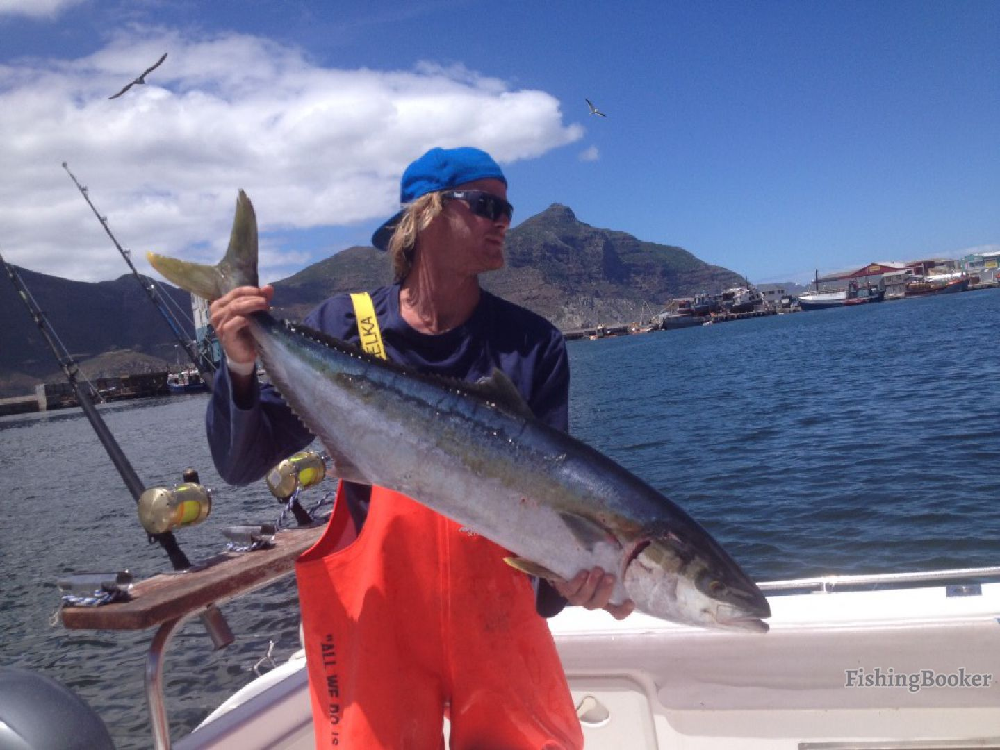
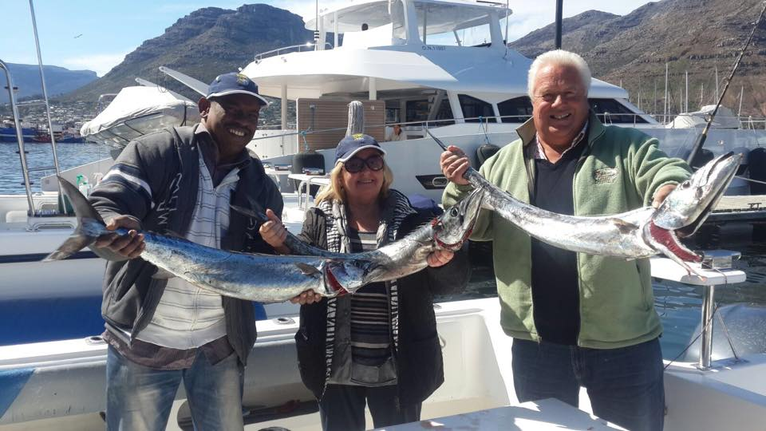
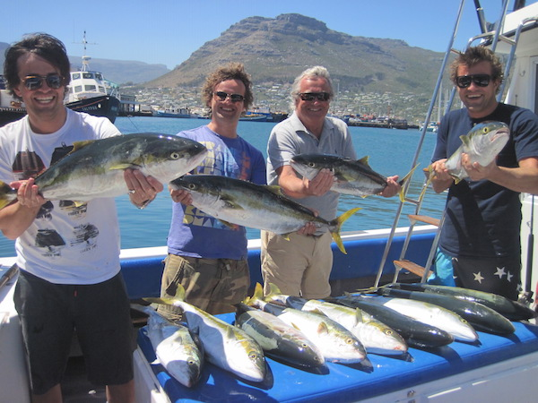
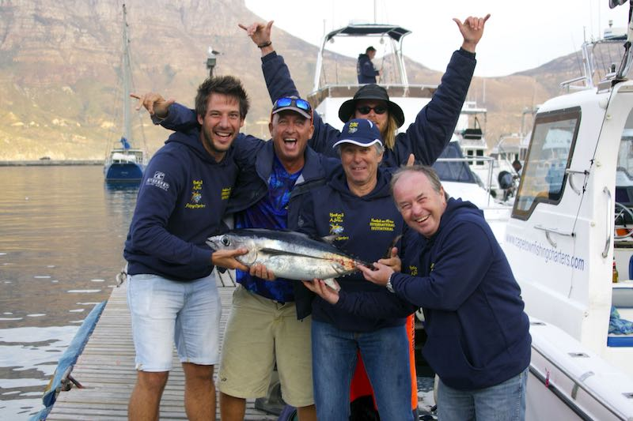
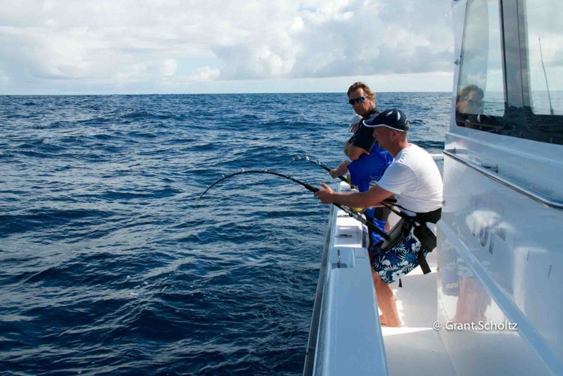

Fishing in Cape Town
If a heavy tug on your fishing line creates a tug at your heart, recreational fishing, deep sea fishing, saltwater and freshwater fishing in and around Cape Town will certainly stir your fishing passion.
Kommetjie Bay
Recreational Fishing in and around Cape Town has always been a popular past time. Many fishermen’s journeys are more than likely to end up in Cape Town. There are excellent fishing spots in a number of places depending on whether you are looking for Big Game Fishing or something more along the lines of a quiet fly-fishing trip. Cape Town also offers both saltwater and freshwater fishing options, raging sea fishing or quiet rivers, streams and trout fishing in dams.

Fishing
Fishing in Cape Town with Hooked On Africa is perfect for those who want to charter a private boat or for small groups. This Cape Town based fishing charter operates out of the popular Snoek fishing village, Hout Bay Harbour, Cape Town in South Africa. Hooked On Africa Fishing Charters, the leading Big Game Fishing Charter Company is located in one of the richest fishing grounds left in the world today. With a large selection of boats to charter, an array of different fishing equipment & tackle, we are the ultimate Fishing Charter Company in Cape Town
 Simon's Town pier
The Cape waters offer some of the richest fishing grounds in the world and BIG BLUE SPORT FISHING CHARTERS is privileged to be located in these premium fishing grounds, with quick and easy access to the tuna grounds and Cape Point, famous for yellowtail fishing.
 